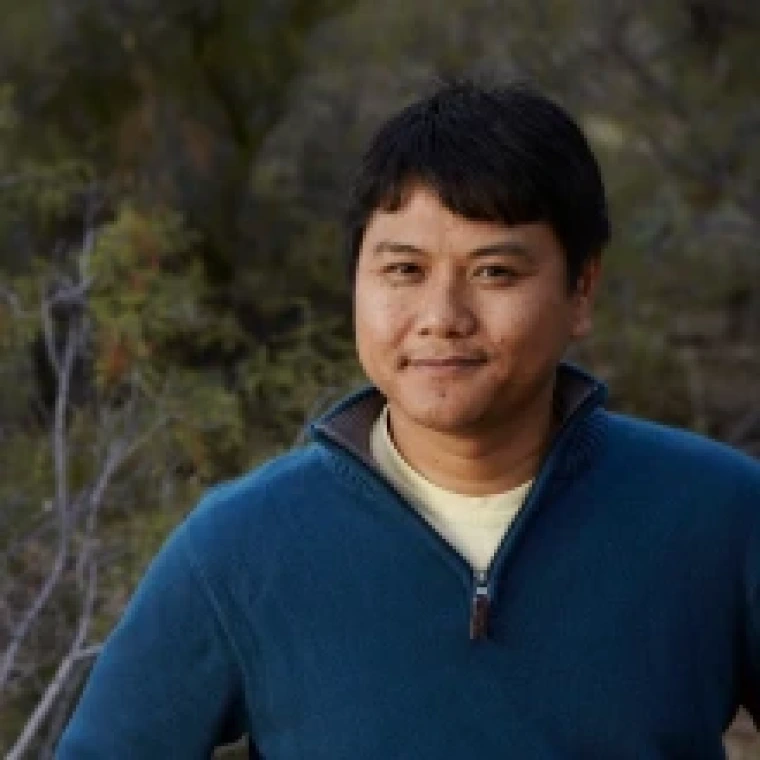

Ask the question. MESA finds the data.
MESA — the Multidisciplinary Environment for Scientific Advancement — is an open-source, agentic AI platform that connects scientific data through curated, indexed metadata. A data lakehouse, a federated data mesh, and AI agents that speak both, running on national research infrastructure today.
01
User interface
Laptop · Desktop · K8s container
02
Agentic AI
MCP · RAG · Agents · Reasoning · Sandboxing
03
Data management
Data Lakehouse (DuckLake) · Data Mesh (iRODS)
04
Compute
CyVerse · TACC · ACCESS-CI · NAIRR
05
Object storage
S3 · OSN · VAST · Lustre
01
Open-source data lakehouse
Analytical tables over open formats — DuckLake, Apache Iceberg, Parquet — with time-travel versioning built in. Query five petabytes like a database, and rewind any table to the state it held when the paper was submitted.
02
Federated iRODS data mesh
One policy engine across the CyVerse Data Store and its federated peers, with CILogon, Globus Auth, and ORCID handling identity. The lakehouse and the mesh interoperate — your data stays where it lives, and still shows up where you work.
03
Agentic AI orchestration
Self-hosted LLM serving on vLLM, RAG pipelines over curated metadata, and an MCP server framework with sandboxed, multi-agent orchestration. Agents that find, describe, and move scientific data — with the guardrails written first.
One line. Four servers. No credentials required.
MESA is not a promise — the MCP stack is public and installs now. One command clones, builds, and registers four CyVerse servers in Claude Code; anonymous public access to the Data Store works out of the box.
| Server | Language | Role |
|---|---|---|
| mesa-mcp | Python | iRODS Data Store + OBO/OLS ontology metadata, DataCite, DuckLake history |
| mesa-ducklake | Python | AVU metadata-history library backing mesa-mcp |
| irods-mcp-server | Go | Reference iRODS Data Store server |
| formation-mcp | Go | CyVerse Discovery Environment — launch apps, manage analyses |
Tyson L. Swetnam, Ph.D.
Principal Investigator · UNM
Arthur B. Maccabe, Ph.D.
Co-PI · Arizona site lead
David Ebert, Ph.D.
Co-PI · Chief AI & Data Science Officer · Arizona

Lei Cao, Ph.D.
Co-PI · Lakehouse lead · Arizona

Terrell Russell, Ph.D.
Co-PI · Data Mesh Lead · RENCI Site Lead
Illyoung Choi, Ph.D.
Research Software Engineer · Arizona

Kory Draughn
Chief Technologist · RENCI
Alan King
Senior Software Developer · RENCI
Justin James
Applications Engineer · RENCI
Sarah Roberts
Research Software Engineer · Arizona
Tony Edgin
Data Curator · Arizona

Edwin Skidmore
Cloud Orchestration / Infrastructure · CyVerse
Greg Chism, Ph.D.
EOT Lead · Senior Personnel · Arizona
Jingdi Chen, Ph.D.
5G/6G Networking · Arizona
CK Chan, Ph.D.
Astronomer · Arizona
Wolfgang Jentner, Ph.D.
Human-Computer Interaction · Arizona
Junjia Guo
PhD Student · Arizona
Pengxin Wang
PhD Student · Arizona
MESA kicks off with NSF IDSS, July 2026.
The project team convenes with the NSF Integrated Data Systems & Services program for the MESA kick-off meeting — the University of New Mexico, the University of Arizona, and UNC-CH/RENCI, setting the two-year prototype baseline in motion.
Also new: co-investigator CK Chan, Ph.D. worked with OpenAI on using Codex to simulate black holes — a look at agentic coding against Event Horizon Telescope science.